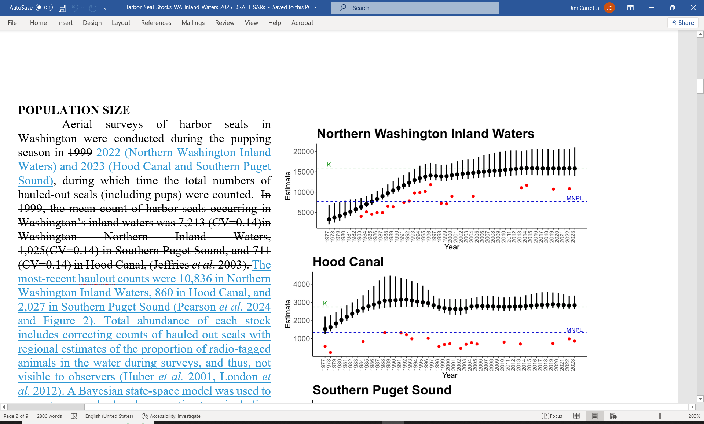

Stock Assessments
Editor Duties, File Locations, Workflow, Contacts
The SAR editor should be familiar with the Guidelines for Preparing Marine Mammal Stock Assessments (NMFS 2023) and section 117 of the Marine Mammal Protection Act. Keeping up with the marine mammal literature is also critical. The editor is also responsible for drafting and coordinating responses to public comments on draft SARS. The Pacific Region SARs are written by 4 separate laboratories: SWFSC, NWFSC (Southern Resident Killer Whale = Brad Hanson), AKFSC (several pinniped reports = Sharon Melin), and PIFSC (Amanda Bradford). The Pacific SAR editor coordinates the annual revision of reports, along with the Office of Protected Resources (OPR review of draft and final reports). Responsibility for archiving the most-recent versions of individual SAR files ultimately rests with the authors of the individual SARs, for example, PIFSC maintains its own files. The SAR editor should try to mirror all up-to-date SAR files in a single place though. If a Word file is lost or corrupted, a PDF to Word conversion (using the online versions of published SARs) is useful for reconstruction. Prepare draft SARs each fall / winter in preparation for the winter / spring Pacific Scientific Review Group meeting. Draft SARs are submitted to the SRG liaison (Laura.McCue@noaa.gov PIFSC) 6 weeks before the meeting, so that 1) OPR can have 3 weeks to review them for issues and 2) the SRG liaison can send them to the Pacific Scientific Review Group (PSRG) 3 weeks before the meeting. Post-meeting, draft SARs are further revised, based on comments received. By summer, draft SARs are usually published in the Federal Register for a 90-day public comment period. The SAR annual cycle has taken a year to complete in recent years. For example, the 2024 draft SARs were just released for public comment in March 2025, during the same time that we were submitting draft 2025 SARs to the PSRG. This overlap makes the SAR editor task more difficult, as it means multiple ‘draft’ versions of the same SAR may exist at one time (e.g., there are currently two versions of the Southern Resident Killer Whale SAR (draft 2024 in public comment and draft 2025 submitted for PSRG review). Ideally, the final 2024 version should have been published prior to drafting a 2025 report. This necessitates accepting changes to the draft 2024 version to use as a template for the 2025 report, not a good situation. A variety of techniques are being used to revise the reports annually, from the simplest (Word markup and track changes, SWFSC), to more complex R-based revision, using Quarto or Markdown (MML, PIFSC). Common to all approaches is the requirement to show transparent revisions for the regional Scientific Review Groups and the public to assess. Some examples of how actual revisions should appear are shown in Figure 1.

The Appendix in the SARs dealing with Fishery Descriptions has largely fallen by the wayside due to lack of bandwidth. Future editors would want to coordinate with the various regional offices for updates, especially whoever works on the NMFS List of Fisheries (Dan.Lawson@noaa.gov West Coast Region).
List of current SAR personnel and roles
Jim.Carretta@noaa.gov (Writes, edits, coordinates the production of SARs from multiple Science Centers. Sometimes responsible for ensuring that final SARs are 508 compliant for posting on websites. Otherwise, someone in the publications division (formerly Kit.Johnston@noaa.gov, retired) who deals with Technical Memoranda should help with this. Compliant documents need to be sent to the NOAA Institutional Repository to be checked prior to publication. Eric.Patterson@noaa.gov, Kristy.Long@noaa.gov, Megan.Wallen@noaa.gov (National review of draft and final SARs prior to release for SRG review / public comment, and final publication). Zachary.Schackner@noaa.gov (Federal Register coordination and review of SARs for release as drafts and 90-day public comment period). Laura.McCue@noaa.gov (Pacific SRG liaison. Draft SARs sent to her at least 3 weeks before an SRG meeting for distribution to the group.) Justin.Greenman@noaa.gov, Lauren.Saez@noaa.gov : they provide annual information on the human-caused mortality and serious injury cases that feed into the SAR revision process.